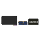
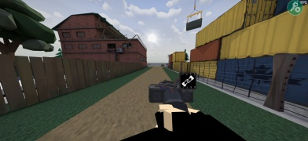

甜瓜影片轉換器
影片播放器 2.0 網頁轉換工具
168 幀392 × 180JPEG
正在載入原版模板…
完成
兩個存檔都下載並匯入 Melon Playground。

原作者播放器
保留原版播放器 Lua、存檔結構、播放方式與資源。
網頁只會替換 gb.melsave 中的 1～168 張影片影格；gb mp4.melsave 直接使用原作者檔案。

影片播放器 2.0 網頁轉換工具
正在載入原版模板…
兩個存檔都下載並匯入 Melon Playground。

保留原版播放器 Lua、存檔結構、播放方式與資源。
網頁只會替換 gb.melsave 中的 1～168 張影片影格；gb mp4.melsave 直接使用原作者檔案。